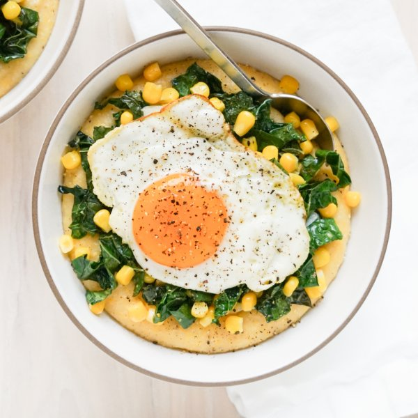

Parmesan Polenta with Lemony Kale-Corn Sauté & Fried Egg

Total Time
40 min
Nutrition (per serving)
629.8 kcalCalories
31.3 gProtein
65.7 gCarbs
29.4 gFat
Full nutrition table
| Calories | 629.8 kcal |
| Total fat | 29.4 g |
| Saturated fat | 8.9 g |
| Trans fat | 0.3 g |
| Cholesterol | 183 mg |
| Sodium | 215.7 mg |
| Carbohydrates | 65.7 g |
| Fiber | 5 g |
| Sugars | 4.5 g |
| Protein | 31.3 g |
| Potassium | 994 mg |
| Calcium | 157.5 mg |
| Iron | 5.6 mg |
| Vitamin A | 704.4 IU |
| Vitamin C | 105.5 mg |
| Vitamin D | 41.5 IU |
Cookware
Ingredients
- 48 fl ozchicken or vegetable broth
- 4eggs
- 2 cupsfrozen corn
- 2 clovesgarlic
- 2 buncheskale
- 1lemon
- 4 ozParmesan cheese
- 1 ½ cupspolenta (cornmeal)
- black pepper
- extra virgin olive oil
- salt
Steps
- In a medium saucepan, bring broth to a boil. Reduce heat to low and gradually add polenta in a thin steady stream, while whisking, until the polenta is incorporated; add salt. Cover and cook, stirring occasionally, until polenta is soft and the texture is creamy, 15-25 minutes.48 fl oz (6 cups) chicken or vegetable broth
1 ½ cups polenta (cornmeal)
½ tsp salt - Meanwhile, wash and dry kale. Fold leaves in half lengthwise and slice off the stems. Chop or tear leaves into bite-sized pieces and place in a medium bowl.2 bunches kale
- Preheat a large skillet over medium-high heat.
- While the skillet heats up, peel and thinly slice garlic. Add to the bowl with the kale along with corn.2 cloves garlic
2 cups frozen corn - Once the skillet is hot, add oil and swirl to coat the bottom. Add kale, corn, and garlic to the skillet in handfuls, waiting for kale to wilt before adding the next handful. Cook, stirring often, until the kale is tender and corn is warmed through, 1-2 minutes. (Reserve bowl for the next step.)1 tbsp extra virgin olive oil
- Wash, dry, and juice lemon into the skillet. Season with salt, then stir to combine. Return veggies to the bowl, loosely cover with aluminum foil, and set aside.1 lemon
¼ tsp salt - Finely grate Parmesan.4 oz Parmesan cheese
- When the polenta is done, add Parmesan, oil, and pepper to the pan; stir to combine. If the polenta is too firm, add hot water, 1 tablespoon at a time, until you reach a desired consistency. Remove from heat and cover to keep warm.2 tbsp extra virgin olive oil
½ tsp black pepper - Wipe the skillet clean with paper towels and return to medium-high heat.
- Once the skillet is hot, add more oil and swirl to coat the bottom. Gently crack eggs into the skillet and cook until the tops of the whites are set but the yolks are still runny, about 4 minutes. Remove from heat and season with salt and pepper.1 tbsp extra virgin olive oil
4 eggs
⅛ tsp salt
⅛ tsp black pepper - To serve, divide polenta between plates or bowls; top with kale-corn sauté and eggs. Enjoy!